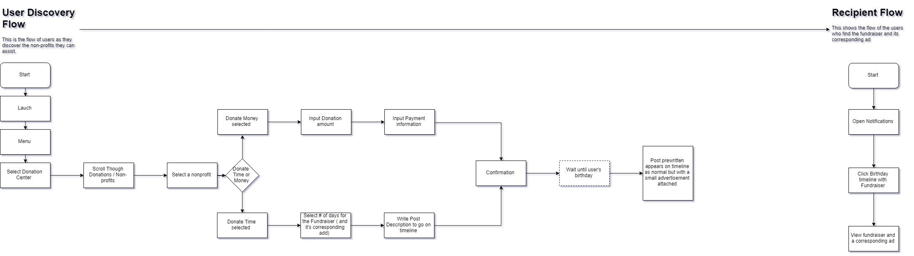

Role - Product Designer
Client - Facebook Inc
Time - June 2018
Tools - Sketch, Proton, Origami, Pop, User Research
Need Statement - How can we maximize the amount of donations people make on Facebook?
Project Brief |
Role - User Research, Ideation,
Prototyping, UI/ UX Tools - Sketch, Framer, Origami, Pop TImeline - June 2018 to August 2018 |
||||||||||
Background |
Introduction to Facebook
Fundraising? Internship Overview The structure of my internship at Facebook was split into 2 main parts. The first being a 2 week training program to learn fundamental design tools like origami, framer, and sketch, while also learning design considerations like Accessiblity and language differences. The second involved me spending 6 weeks on working on a top secret Facebook tool. The detials can be found in Facebook Internal Tools. This project was a result of an application of the 2 weeks of training. I also worked on a side project called Facebook blind dating and pitched it to Facebook's dating team. Project Overview My project was to improve the current Facebook Fundraising system to convince users to give more to non-profits. During my 2 weeks I spent one learning the fundamentals of the tools I'd be using like Keynote and Sketch, and spent the other week conducting research and getting data about Facebook Fundraising Usage. I then iterated designs to modify currently exisiting features and conducted user testing to calidate my prototype designs and deliver design concepts to the my soon to be managers and fellow interns. |
||||||||||
The Opportunity and User Insights |
The main trend I saw after
analyzing the data is most users
do read about causes on
fundraising profiles and often
do post on times lines for
people's birthdays. This means birthday fundraisers have the potential to get a lot of traffic to specific non-profits. But what if that traffic, could be monitized? I decided to make a system where if a Facebook user views and posts on a friend's time line while they are hosting a birthday fundriaser, they will also view a pay per view advertisement. Then a portion of that ad revenue would be sent to the non-profit organization to raise them more money as a donation for a certain birthday's campaign. After talking to the Fundraising team, I learned this system could work, but the biggest issue was the transaction fees and the taxes involved for every single view an ad would get. As far as the taxes go, non-profits are tax exempted so most of the fees can be reduced. However, this doesn't work on personal causes yet. The transaction fees could be avoided by making a minimum required donation raised amount to minimized the amount of money lost. (For example, if you raise $200 from 400 people with $0.15 transaction fees( or $60 in fees ) , then the non-profit will get $140 from those views. However, if $50 was raised with the same group of people and same fees, then the money won't be raised for an individual and the total amount earned would be sent the non-profit directly since their is only one transaction fee associated in that case for the total amount. This system helps : - Users make donations without the long process of input card information By : - Minimizing the steps a user goes though to make a small donation And it is an improvement because: - It undeniably increases the maximum amount of money a non-profit recieves from fundraising. - It can also be added simply into the currently existing Facebook System. |
||||||||||
User Research |
As a part of my NDA, I agreed to
not show the results of my user
research since it was conducted
with information from another
team. But the big take aways
were the design challenges I
developed. |
||||||||||
Design Challenge |
- No financial cost required - Must take less steps ( i.e. less clicks / taps ) - Usable Anywhere - Easy to gain information on a non-profit - Make it easy to implement into the currently exisisting facebook app |
||||||||||
Setting Goals for the MVP |
My main focus was to make a flow
that would - let a user find a non-profit - Contact a non-profit to learn more - Post a non-profit on your timeline. |
||||||||||
User Flows (State Diagram) |
See Below |
||||||||||

|
|||||||||||
Ideation |
Questions to consider - Where do we start? - Where do we end? - How will a user know what to do? - Where do I find additional information ? After asking some basic questions, I did some brainstroming and made some preliminarly sketches of my design.  |
||||||||||
Final Deliverable |
|
||||||||||
Side Project |
Facebook Blind Dating and Facebook Internal tools got much more time then this product did. So if you liked this, please visit them as well! | ||||||||||